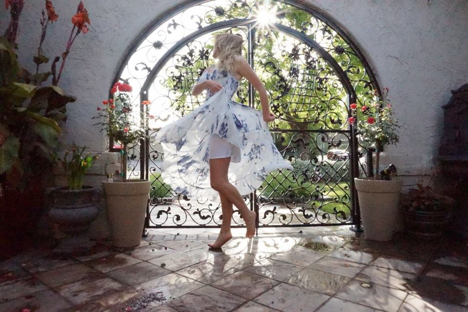

Born and raised in Los Angeles, now studying, living and working in the Bay Area. Finding inspiration through the medium itself, Loren's art showcases the beauty in powder charcoal. Taking symbols from early iconography and religious art, and in turn creating a new female perspective based off historical themes. Loren creates her own female icons into a society driven by strict guidelines for women.
Loren is an eclectic and interdisciplinary artist, working in many 2D mediums from, oil paint, watercolor, charcoal, pastel, pen and ink, scratchboard, to clay, specializing in wheel throwing and hand building.